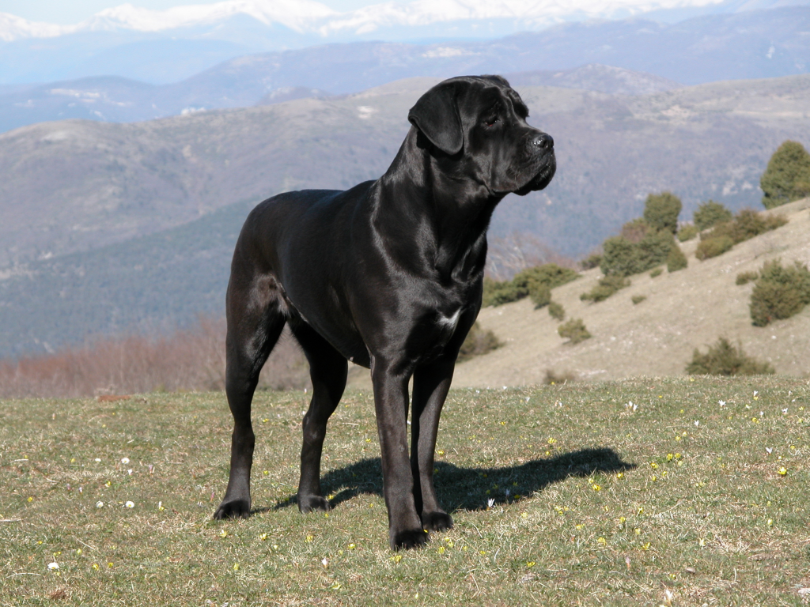

Cane Corso
Weight
Coat
Color
40-50 kgs
Coat is short, but double-layered
Many colors
The Cane Corso is a medium to large size mastiff-like dog—sturdy, muscular, largeboned, and athletic. This breed is strong and agile, and is neither overly bulky nor racy. This dog longer than tall. The gait is effortless and powerful. The coat is short, stiff, and dense. The Cane Corso projects confidence and power, a capable protector of property and family.